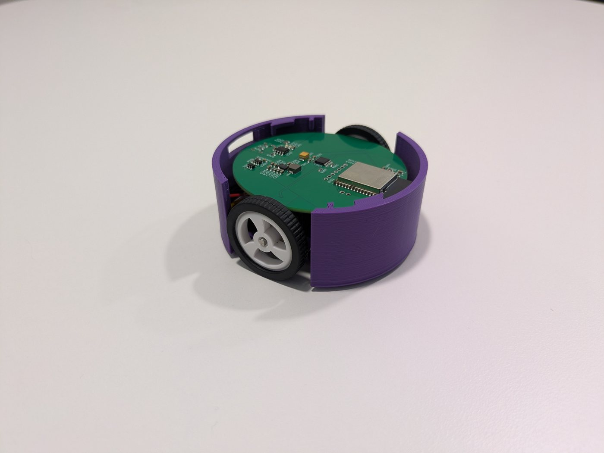
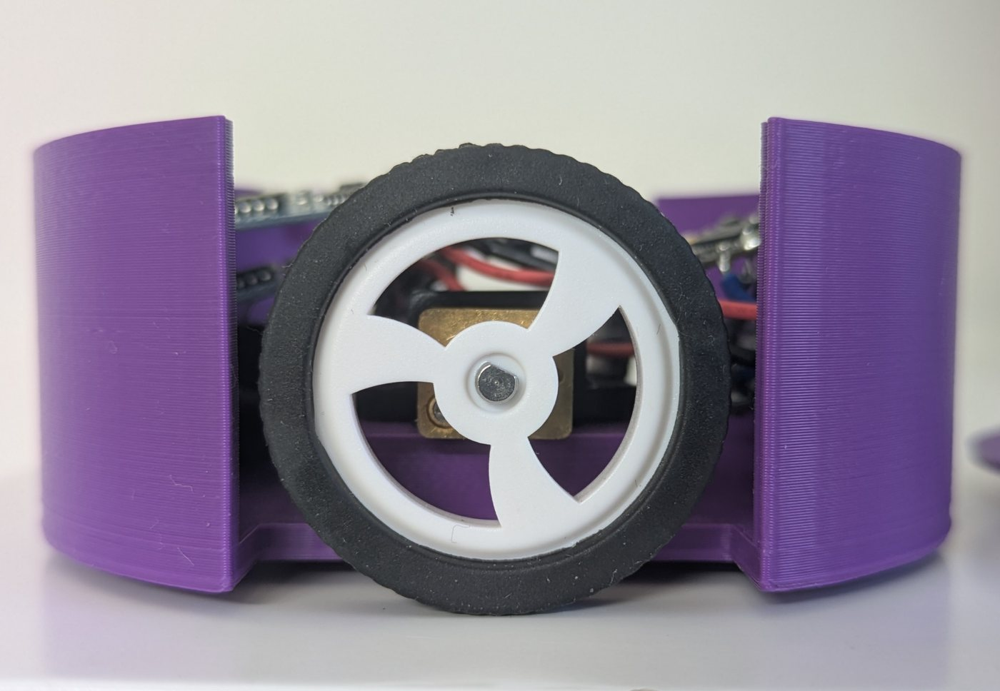
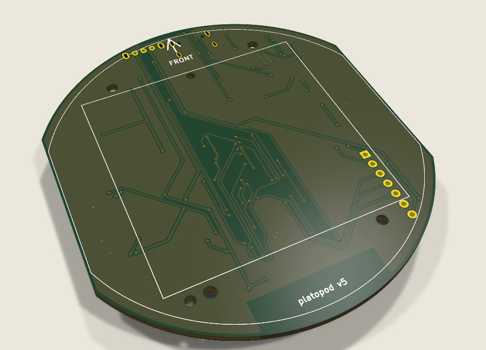

How it works.
One camera, small robots and a computer that builds a world around them. There is little to set up and little to go wrong in front of a class, and your own code can drive it in any language.
The kit
The pods, a camera and a projector on one tripod, and a small computer. There are no markers to lay out, no walls to build, no tracking system to install and no cables to the robots.
- Switch onThe box starts by itself and opens its own Wi-Fi. The console is a web page on that network.
- CalibrateOne pod drives a small circle, about half a minute. From its path the system works out how the camera sits over the table.
- DrawClick two corners of a rectangle on the screen, or trace another shape, and that is the arena. The pods never cross its edge, although it exists only in software. If the camera is knocked, the pods stop until the arena has been checked.
The pods
Each pod is a round robot 85 mm across, with two wheels, a small rechargeable battery and a marker on its lid that the camera reads. It is kept simple by design: it takes wheel commands over Bluetooth and stops if they stop arriving. The intelligence is on the server, where it can be read, changed and tested.




Seeing the arena
One overhead camera reads the marker on every pod and turns it into a position and a heading, many times a second. Nothing else goes on the table. From the same picture the console draws a top-down map at a constant scale, a picture for the projector and a 3D view for the big screen.

A world around the pods
Real pods and virtual units share one world, and an exercise cannot tell them apart. The server simulates what the robots carry and what surrounds them.
- SensorsEleven, simulated: gas with a real detector's lag, GNSS, sonar, radar, lidar, thermal, rangefinder, IED detector, direction finding, UAV camera and friend-or-foe. Each pod's set, and each sensor's noise, can be changed while an exercise runs.
- EngagementEvery shot is resolved against the weapon, line of sight, cover, visibility and the target's armour. Damage slows a unit and degrades its fire.
- Rules and opposing forceWeapons control and the rules of engagement are checked before each shot. The opposing force needs no operator.
- UmpireGas releases, wind shifts and strikes are injected mid-exercise and show on sensors and maps straight away.
- SafetyWhatever drives it, a pod will not leave the arena, cross a declared obstacle or drive into another robot.
Your own code, any language
Everything a program does, from driving a pod to reading a sensor, travels over one web connection as plain messages, so any language can drive the arena. Small libraries for Python, C, Java and JavaScript make it a few lines. Each example takes a free pod, reads its sonar and turns away from anything closer than 20 cm.
Python
from platopod import Arena
arena = Arena("wss://a.arena.platopod.com/api/control")
pod = arena.take_pod() # waits for a pod no one else is driving
arena.subscribe_sensors(pod, ["sonar"])
while True:
sonar = arena.get_sensor(pod, "sonar")
if sonar:
ahead = sonar["ranges"][0] # beam 0 points ahead
if ahead < 0.20: # within 20 cm
arena.cmd_vel(pod, 0.0, 1.2) # turn on the spot
else:
arena.cmd_vel(pod, 0.10, 0.0) # drive forward
arena.sleep(0.1)C
#include "platopod.h"
int main(void) {
pp_arena *arena = pp_connect("wss://a.arena.platopod.com/api/control");
int pod = pp_take_pod(arena); // waits for a pod no one else is driving
pp_subscribe_sensors(arena, pod, "sonar");
while (1) {
double ahead;
if (pp_sensor_num(arena, pod, "sonar", "ranges[0]", &ahead)) { // beam 0 points ahead
if (ahead < 0.20) // within 20 cm
pp_cmd_vel(arena, pod, 0.0, 1.2); // turn on the spot
else
pp_cmd_vel(arena, pod, 0.10, 0.0); // drive forward
}
pp_sleep(arena, 0.1);
}
}Java
import platopod.Arena;
import platopod.Json;
public class Avoid {
public static void main(String[] args) {
Arena arena = new Arena("wss://a.arena.platopod.com/api/control");
int pod = arena.takePod(); // waits for a pod no one else is driving
arena.subscribeSensors(pod, "sonar");
while (true) {
Json sonar = arena.getSensor(pod, "sonar");
if (sonar != null) {
double ahead = sonar.get("ranges").at(0).asDouble(); // beam 0 points ahead
if (ahead < 0.20) { // within 20 cm
arena.cmdVel(pod, 0.0, 1.2); // turn on the spot
} else {
arena.cmdVel(pod, 0.10, 0.0); // drive forward
}
}
arena.sleep(0.1);
}
}
}JavaScript
import { Arena } from "./platopod.mjs";
const arena = await Arena.connect("wss://a.arena.platopod.com/api/control");
const pod = await arena.takePod(); // waits for a pod no one else is driving
arena.subscribeSensors(pod, ["sonar"]);
while (true) {
const sonar = arena.getSensor(pod, "sonar");
if (sonar) {
const ahead = sonar.ranges[0]; // beam 0 points ahead
if (ahead < 0.20) { // within 20 cm
arena.cmdVel(pod, 0.0, 1.2); // turn on the spot
} else {
arena.cmdVel(pod, 0.10, 0.0); // drive forward
}
}
await arena.sleep(0.1);
}A real pod has a narrow range of speeds, so the server fits each command to what that pod can do.
In your room or hosted
The same software runs on a box in your room, on its own Wi-Fi, or on our server, several arenas at once, reached from any browser. A laptop in the room can carry a webcam's view of real pods up to the hosted arena; that part is being tested. The exercise also reaches ATAK, laid over a real map.
Built on ROS 2, with over three thousand automated tests. Engineering details are available on request.